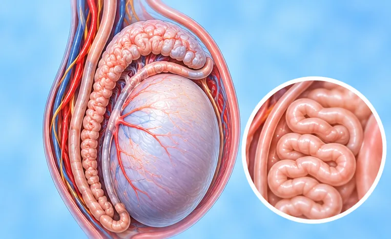

附睾结核
睾丸后方小盘管的结核菌感染
这是什么
睾丸后方的小管（附睾）被结核菌感染。它常与身体其他部位的结核有关，通常发展缓慢。
- 阴囊，睾丸后方
- 男性，常合并其他结核
- 缓慢肿胀、隐隐作痛
- 就诊科室
- 家庭医生、泌尿科医生、结核或感染科医生
- 多发人群
- 肺部或其他部位有过结核的男性
- 传染性
- 睾丸本身很少传染，但肺结核可以传染；请询问医生
- 病程
- 进展缓慢；需要医生诊治并随访数月
常见表现

夜间盗汗盗汗 
排尿灼痛排尿灼痛（尿痛）
其他症状
- 睾丸后方肿胀或有肿块，常只有隐隐的痛
- 阴囊有沉重下坠感
- 有时阴囊皮肤出现溃口或流脓
为什么会这样

免疫力低下免疫抑制 
密切接触或共用物品接触传播
其他原因
- 结核菌从肺部或身体其他部位经血液扩散
- 由泌尿道或前列腺的结核蔓延而来
出现这些情况请先看医生
- 睾丸突然剧痛：立即去医院
- 咳嗽超过两周，或咳出血
- 发热伴寒战，或阴囊发热发红剧痛
- 肿块不断变大，或溃口流脓
- 尿中带血，或不明原因体重下降
如果有以上情况，请先看医生，再来做调理。
本页只是一般性的健康资讯。请继续按时服用平常的药物，并继续看医生。
请继续日常治疗
请继续按医嘱服药，并按时复诊。我们的调理是温和的辅助，不能代替医疗。
日常护理

按医嘱用药遵医嘱服药 
定期看医生复查定期随访
更多自我照顾的方法
- 多休息，多喝水，规律均衡饮食
- 穿合身有支撑的内裤，感觉更舒适
- 咳嗽时掩住口鼻，保持室内通风
告诉理疗师
- 发烧或正在感染
- 糖尿病或皮肤感觉减退
- 皮肤破损、发红或疼痛
- 肾脏或肝脏疾病
调理师会在开始前和你确认这一项。
常见问题
附睾结核是什么？
睾丸后方小盘管的结核菌感染。睾丸后方的小管（附睾）被结核菌感染。它常与身体其他部位的结核有关，通常发展缓慢。
附睾结核有哪些常见表现？
夜间盗汗；排尿灼痛
为什么会有附睾结核？
免疫力低下；密切接触或共用物品
有附睾结核要怎么照顾自己？
按医嘱用药；定期看医生复查
AI Body Master 的调理对附睾结核有帮助吗？
调理是温和的无针经络养生辅助，不能治疗或治愈附睾结核，也不能代替药物或医生。开始前请告诉理疗师。
相关疾病
参考资料: General information based on public health sources such as Mayo Clinic, NHS, Cleveland Clinic and NCBI StatPearls.
页面更新: 2026-11-01